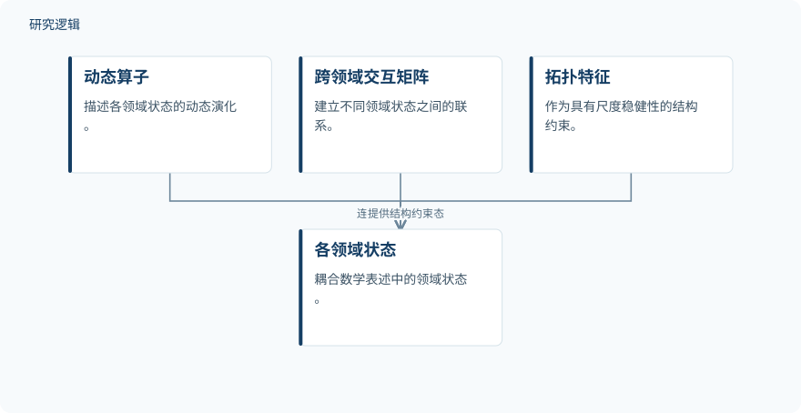

摘要解读
面向多尺度气候、能源、水文、城市、工业与健康系统的量子拓扑神经算子与数字孪生智能
Quantum Topological Neural Operators and Digital Twin Intelligence for Multiscale Climate, Energy, Hydrological, Urban, Industrial and Health Systems
解读更新 2026-10-17 14:58 · 依据公开摘要整理，未核验全文细节
跨领域数字孪生的难点，不只是数据来源不同，还在于模型尺度不兼容、系统结构难以统一表达。这项研究提出QTNODT框架，尝试连接拓扑、神经算子与风险决策；阅读价值在于理解其方法接口，而非把示例评分当作应用成效。
文章目录
数据越来越多，数字孪生为何仍然割裂
气候、能源、水文、城市、工业和健康系统，正通过异构传感器、仿真与观测基础设施持续获得数据。但摘要指出，各领域专用模型、互不兼容的尺度，以及对非线性拓扑结构的薄弱表达，仍使数字孪生彼此割裂。研究希望为跨领域预测、韧性评估和干预设计建立共同的分析语言。
用拓扑约束与动态算子连接领域状态
作者综合神经算子、量子机器智能、拓扑学习及多个应用领域的文献，提出“量子拓扑神经算子数字孪生智能”（QTNODT）框架。其组成包括持久性与图拓扑表征、量子或量子启发式特征编码、学习函数空间之间解映射的神经算子，以及数字孪生数据同化、不确定性量化和风险感知优化。
在所提出的耦合数学表述中，各领域状态通过动态算子演化，跨领域交互矩阵负责建立联系，拓扑特征则作为具有尺度稳健性的结构约束。这里描述的是框架组成与数学关系，不能据此认定它已在量子硬件上实现，或已完成跨领域系统部署。
依据摘要整理的领域状态耦合关系


概括摘要提出的动态演化、跨领域联系与拓扑约束关系，不表示已完成的系统部署，也不是论文原图。
下载 SVG图示关系说明
实线表示相邻阶段的信息流，虚线表示跨阶段联系或反馈。
动态算子 → 各领域状态：描述状态演化；跨领域交互矩阵 → 各领域状态：连接不同领域状态；拓扑特征 → 各领域状态：提供结构约束
评分演示展示整合方式，不代表实证性能
摘要报告了一项归一化至0–10的数值演示：加权领域得分为8.141，在示例性不确定性惩罚下，风险调整后的QTNODT得分为7.813。演示用于说明如何综合就绪程度、孪生保真度、拓扑稳定性、计算能力与治理因素，不是对真实系统性能的实证测量。
研究明确将主要价值定位于方法论：为数据、拓扑、算子、孪生和决策之间规定可检验的接口。因此，当前可概括的成果是统一框架与评分整合示例，而不是已经证明预测更准确、系统更可靠或干预更有效。
真实数据、基准比较与前瞻验证仍是关键
仅凭摘要，无法判断实际样本规模与构成、比较基线的设置，以及验证覆盖哪些领域、尺度和运行条件；这些信息未报告，不等于论文没有涉及。摘要明确指出，实证验证需要真实领域数据集、基准比较和前瞻性评估。因此，数值演示不足以支持跨领域泛化能力或量子相关性能优势的结论。
阅读启发：关注预测维护中的接口如何落地
阅读启发：面向智能运维，可进一步关注框架如何把设备状态数据、拓扑表征、动态预测与风险决策对应起来。后续阅读值得追问：这些接口如何被具体定义？不确定性怎样进入评分与决策？预测维护场景中的证据来自示例还是实际评估？这些问题有助于区分框架的组织价值与尚待验证的应用效果。
以上为本站阅读启发与建议，不是论文已验证的结论。